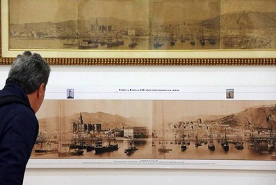

Mariano Fortuny, la pasión oriental de un catalán universal
Tras una década oculta en los almacenes del Prado por las obras del Casón del Buen Retiro, la pintura del XIX reivindicaba su espacio propio en el museo. Primero, con una exposición de sus obras maestras en las salas de la ampliación de Moneo; después, con su integración definitiva en las colecciones de la pinacoteca y, por último, con importantes monográficas de los principales artistas.
‘Star Wars 8’: cuándo ver el estreno de ‘Los últimos Jedi’
La octava entrega de la saga está dirigida por Rian Johnson y continúa donde terminó Star Wars: The Force Awakens (El despertar de la fuerza), con Rey (Daisy Ridley) encontrándose con Luke Skywalker (Mark Hamill) en el planeta Ahch-To. El reparto de Last Jedi recupera a personajes introducidos en la séptima entrega de 2015, como Daisy Ridley, John Boyega y Adam Driver, así como a la tristemente fallecida Carrie Fisher..
La ONG museística ICOM critica cómo se han entregado las obras de Sijena
ICOM-España lamenta también
"la mala imagen que se ha ofrecido de las Administraciones y de los centros museísticos merced a los acontecimiento de esa jornada".
El organismo de consulta desaprueba que se haya producido
"una utilización mediática y política de este asunto hasta el extremo de ser convertido en una bandera partidista o partidaria, relegando las certidumbres y requerimientos patrimoniales y museísticos a un plano secundario".
En los laberintos de la tecnología: aceleración, monopolio y precariedad
La revolución digital no le sentó nada bien a los primeros ensayos sobre la revolución digital. Durante mucho tiempo proliferaron los estudios tecnológicos morbosos –tanto apocalípticos como integrados– caracterizados por una desconcertante miopía histórica. El conjunto de problemas al que los tecnólogos prestaban atención estaba modulado por el ritmo de lanzamientos comerciales de nuevos gadgets o servicios electrónicos...
Las primeras fotos de Málaga descubren la revolución urbana de la ciudad en el siglo XIX
La Colección Fernández Rivero muestra en La Térmica los paisajes que grandes maestros de la fotografía hicieron de la capital entre 1854 y 1925
Se ven numerosos barcos de madera con las velas arriadas y fondeados en el puerto. Delante de la fachada marítima de una ciudad en blanco y negro dominada por su principal hito arquitectónico: una catedral con su sola y majestuosa torre. Es una de las primeras fotos de Málaga de mediados del siglo XIX y lleva la firma de uno de los grandes pioneros de la imagen, el británico Charles Clifford. Y tras este retrato primitivo casi medio centenar de fotos que nos descubren los paisajes más antiguos de la ciudad, que nos van contando la revolución urbanística de la capital. Un recorrido visual por los orígenes de la ciudad contemporánea que se exhibe desde mañana en La Térmica con los fondos de la Colección Fernández Rivero.